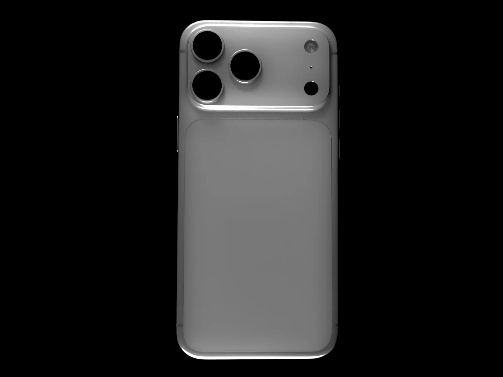

Cámara Fusion
48 Mpx. Ahora con apertura variable.
El diafragma se abre hasta f/1,48 para la noche y se cierra hasta f/4 para que todo el paisaje salga nítido. La luz, a tus órdenes.
Gama auraPhone
AURA A20 Pro. El chip de 2 nm que mueve a los tres nuevos auraPhone: el primero que se pliega y dos Pro con cámara de apertura variable.
1.

La gama / 2026
Tres formas de llevar el AURA A20 Pro. Todos con cámara Fusion de 48 Mpx, Wi-Fi 7 y USB-C.
auraPhone Duo / Plegable
El primer auraPhone plegable despliega una pantalla Super Retina XDR de 7,6 pulgadas sobre una bisagra de titanio. Cerrado, es un auraPhone de 5,4 pulgadas; abierto, pone dos apps lado a lado con Split View. Y dentro, el mismo AURA A20 Pro que los 18 Pro.

Zoom a la innovación
auraPhone 18 Pro y 18 Pro Max: cada sensor, cada píxel y cada milímetro de aluminio, diseñados como un solo sistema.
Cámara Fusion
El diafragma se abre hasta f/1,48 para la noche y se cierra hasta f/4 para que todo el paisaje salga nítido. La luz, a tus órdenes.

Teleobjetivo
Un teleobjetivo de 48 Mpx con calidad óptica hasta x83. El concierto, desde la grada; los detalles, desde primera fila.

Pantalla
Hasta tres actividades en directo sobre una pantalla ProMotion de 120 Hz y 3.000 nits que se lee hasta a pleno sol de agosto.

Diseño térmico
Reparte el calor del AURA A20 Pro por todo el unibody de aluminio: un 40 % más de rendimiento sostenido, partida tras partida.
auraPhone 18 / En detalle
Seis razones para cambiar de teléfono.
AURA Intelligence
Resume, redacta y encuentra lo que buscas, en el propio auraPhone siempre que puede. Tus datos no salen de casa.

Batería
El auraPhone 18 Pro Max aguanta una temporada entera. Con MagSafe de 25 W, el 50 % llega en unos 15 minutos.

auraPhone Duo
Split View en auraOS 27 aprovecha la pantalla de 7,6 pulgadas: el mapa a un lado y el chat al otro.

Resistencia
El frontal más duro de un auraPhone y protección frente al agua y el polvo, para los despistes de cada día.

Conectividad
Descargas que no se hacen esperar y un USB-C con velocidades USB 3 para pasar tus vídeos al auraBook en segundos.

Privacidad
Face ID en los 18 Pro y Touch ID en el Duo: desbloquean, pagan con AURA Pay y rellenan contraseñas. Tus datos biométricos no salen del dispositivo.

Comparativa técnica
El mismo AURA A20 Pro en los tres. Cambia la forma; la ambición, no.
AURA Store